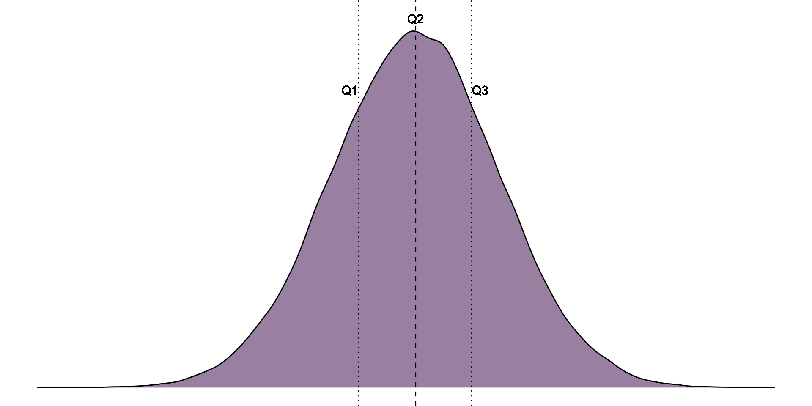

[1] 4.957333[1] 4.957333Descriptive statistics
September 9, 2026
A measure of center (or location) of our data: ⭐
A measure of spread (or width) of our data (red).
Any distribution with more than two prominent peaks is called multimodal.
Notice: more than one prominent peak in the unimodal distribution with a second less prominent peak that was not counted since it only differs from its neighboring bins by a few observations.
![A wide image shows three side-by-side blue bar charts on a white background with light gray gridlines. All three charts use horizontal values from 0 to 30 and vertical values from 0 to just above 20. The left chart has its tallest bars near the beginning, reaching approximately 22, 17, and 12, followed by shorter bars ranging from about 1 to 6. The middle chart contains several low-to-moderate bars, with the tallest cluster near values 19–22 reaching approximately 14. The right chart has separated clusters of bars: an early cluster reaching about 11, a middle cluster reaching about 14, and a later cluster with bars between approximately 3 and 7. No chart titles, axis titles, or legends are visible.](https://openintrostat.github.io/ims/explore-numerical_files/figure-html/fig-singleBiMultiModalPlots-1.png)
The mean (or the median) of the sum of two variables and
:
The mean (or the median) of the sum of a variable and a constant
:
The mean (or the median) of a product of a variable and a constant
:
[1] 4.957333[1] 4.957333Convince yourself this is true for the median as well!
Range [max value - min value]
Quartiles, interquartile range [75th percentile - 25th percentile]
Variance [ estimate = =
, param =
=
]
Standard deviation [ estimate = =
, param =
=
]
Coefficient of variation [ estimate = CV = , param =
]
The difference between the 75th and 25th percentiles of the data. A.k.a., the “middle 50%” of the data. . Can sometimes be expressed as an interval, though less common.

Recommended: https://psu-eberly.shinyapps.io/Effect_of_Outliers/

Variance, Standard Deviation, & Coefficient of Variation all communicate how far individual observations are expected to deviate from the mean.
Because (by definition) the differences between all observations and the mean sum to zero (), these summaries work from the squared difference between observations and the mean (
).
Variance: The expected value of the squared deviation from the mean.
Parameter
: number of individuals in population
: population mean
Estimate
: number of individuals in sample
: sample mean
[1] 4423.807Parameter
: number of individuals in population
: population mean
Estimate
: number of individuals in sample
: sample mean
The variance and standard deviation increase with the mean.
The coefficient of variation allows for fair comparisons of variability between measures on different scales.
, sometimes expressed as:
[1] 3.116278[1] 3.116278[1] 1.765298[1] 1.765298If the mean and variance in height (in centimers) in a sample are and
and
inches, find the mean and variance in inches.
Mean:
Variance: